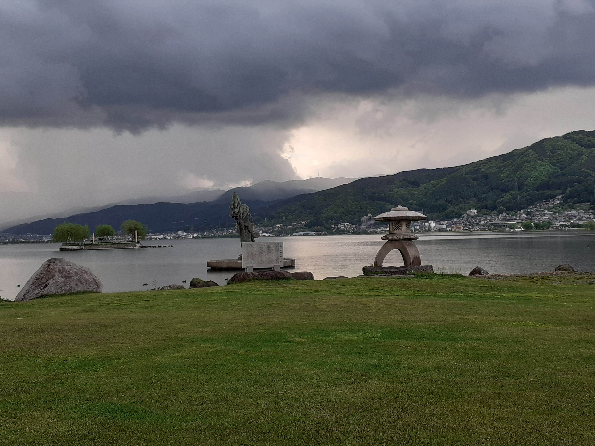
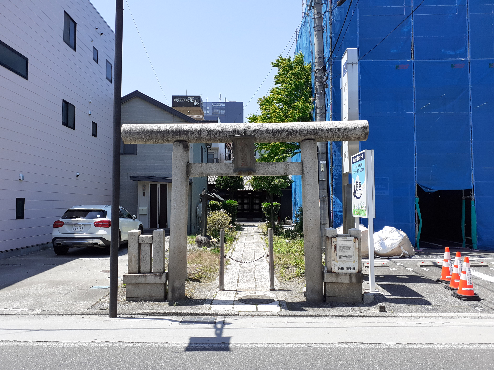
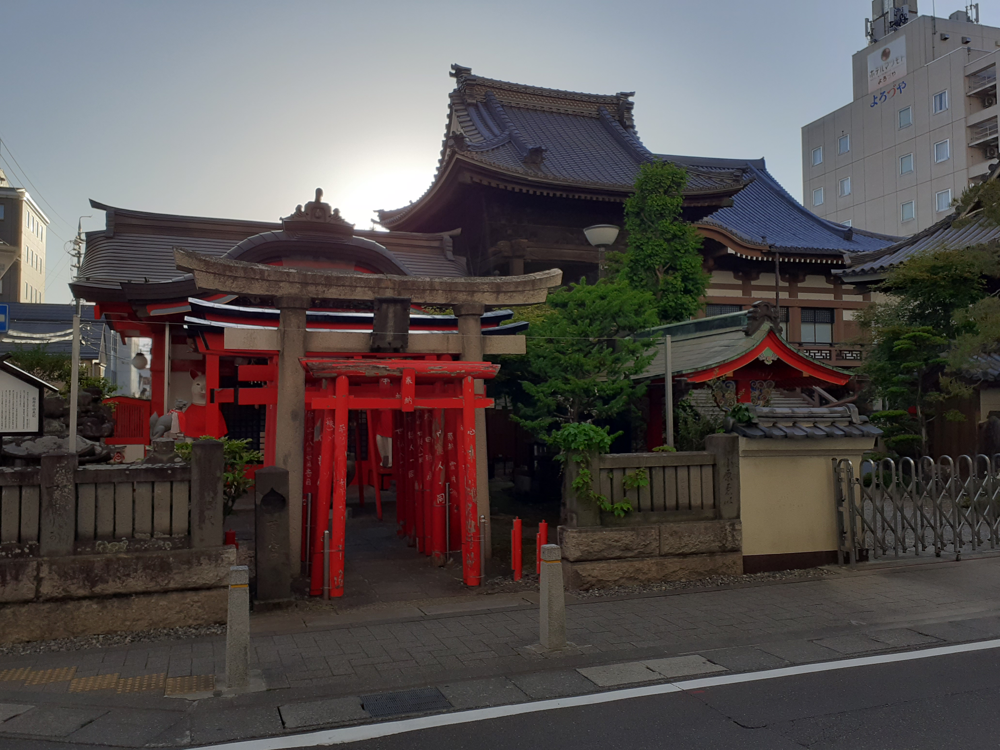
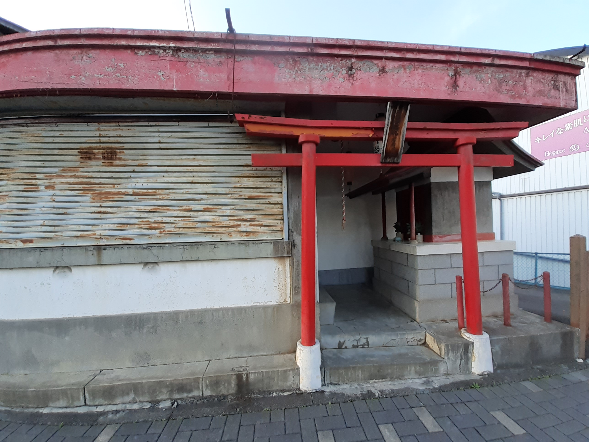
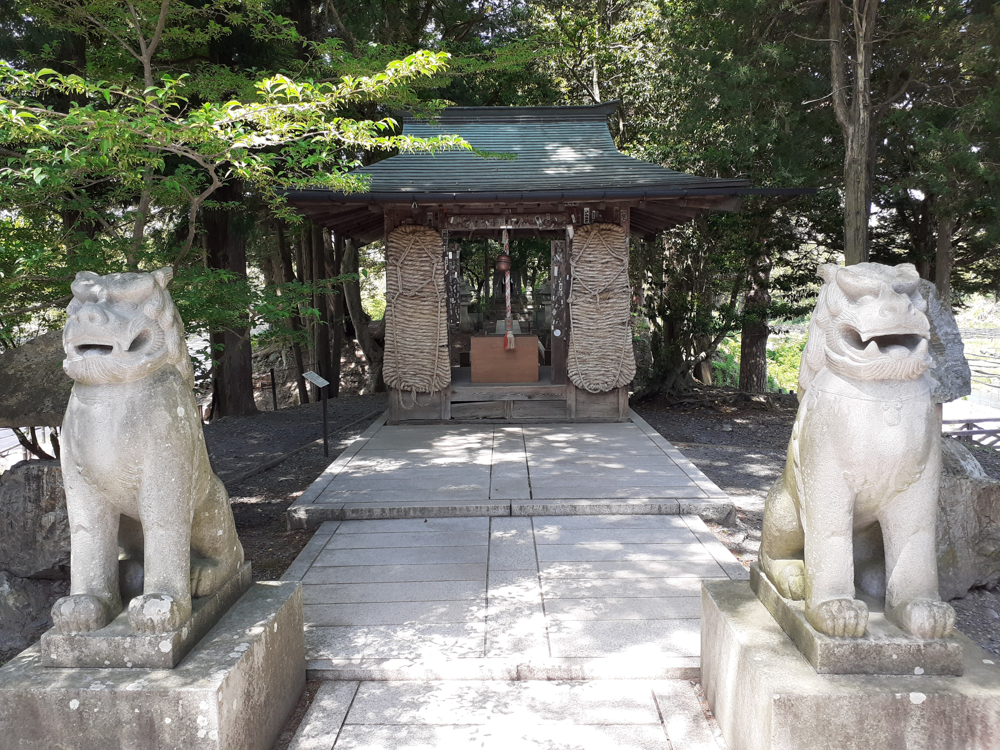
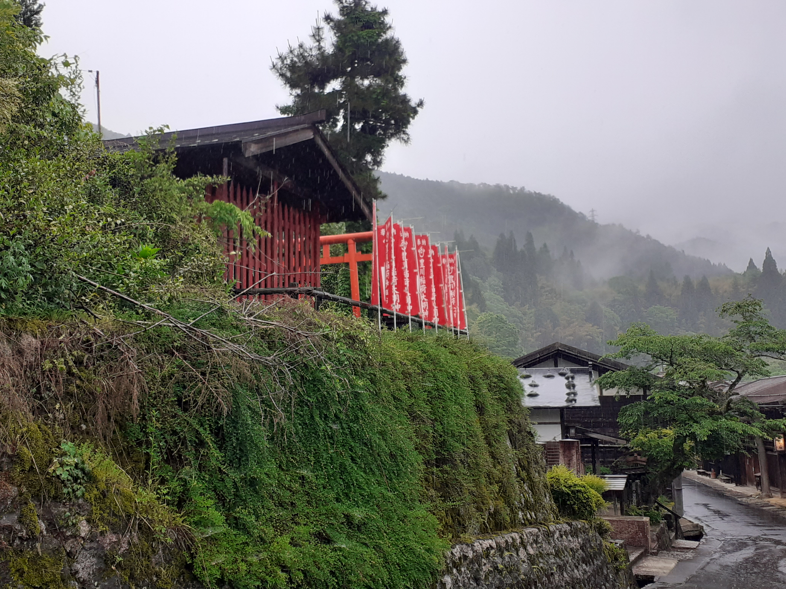

Known for its mountains, shrines in Nagano often start at the foot of a hill or mountain and lead upwards from there. Of course there are plenty to find on flat land, especially in the cities. Variety makes